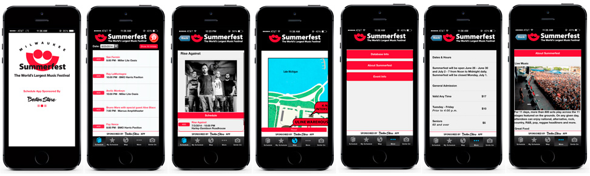
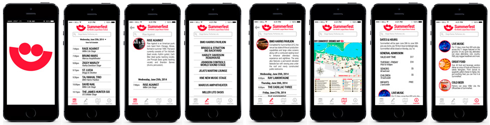
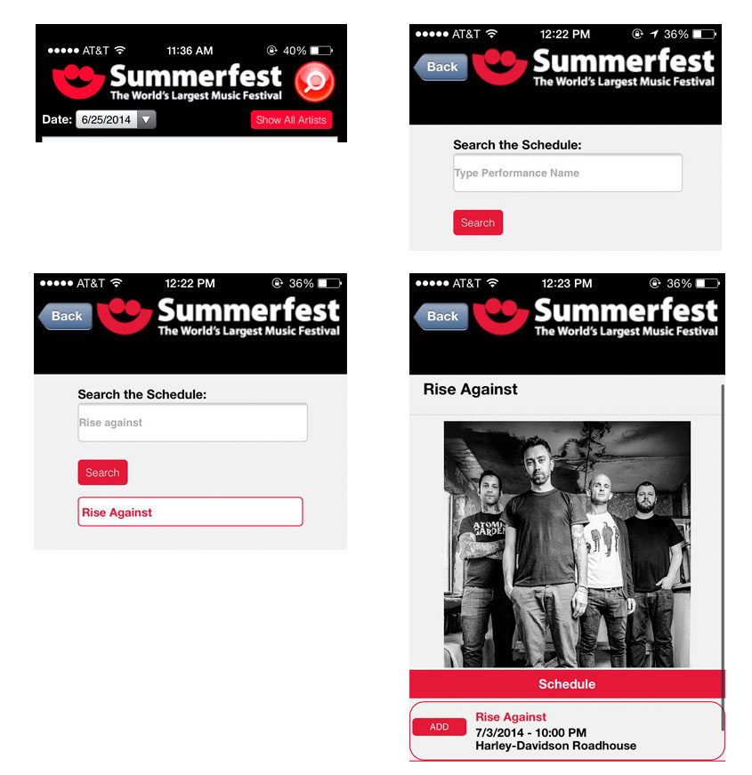
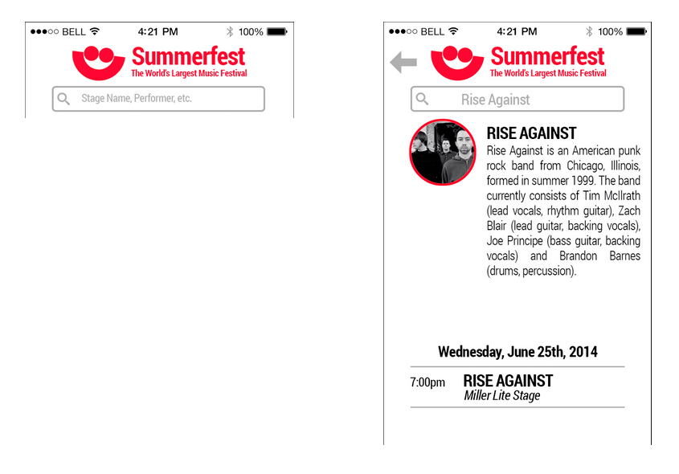
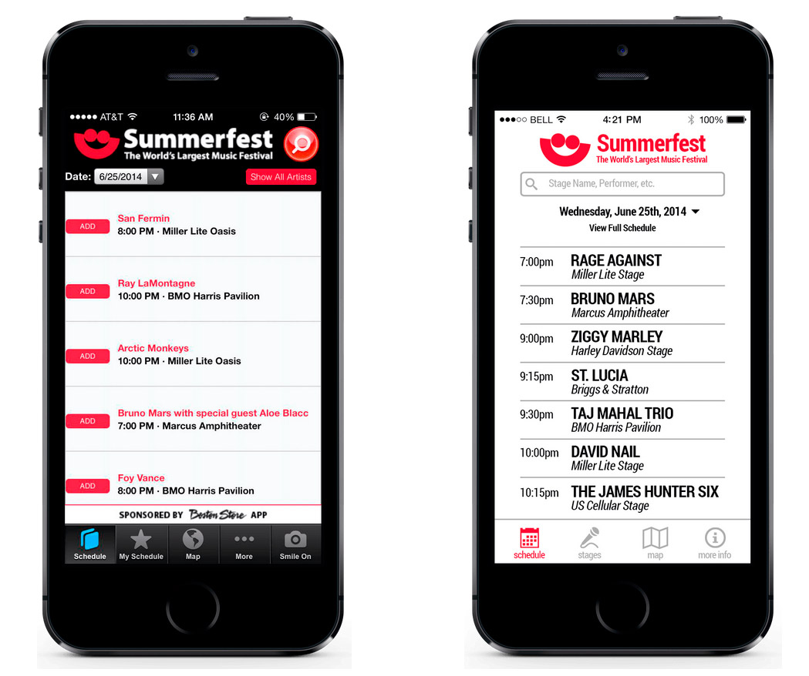
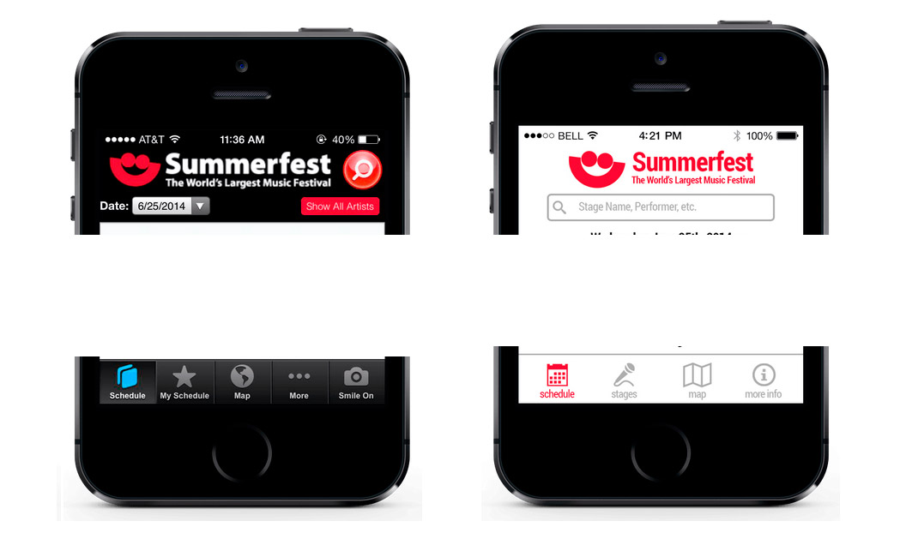
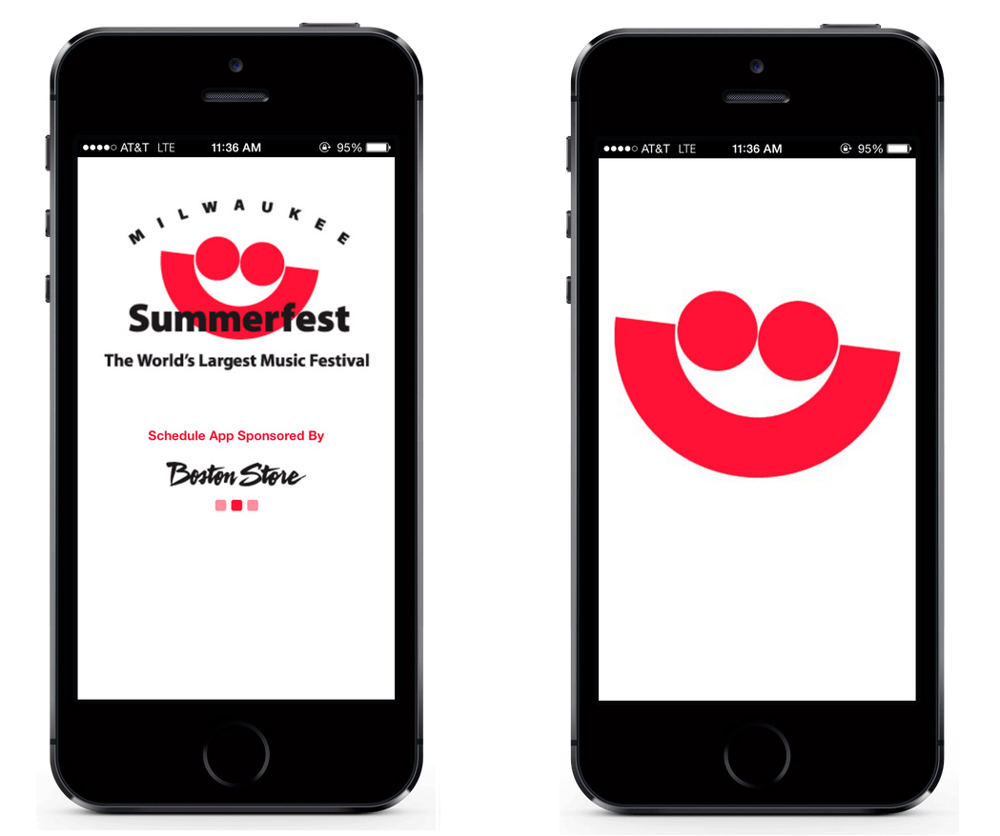
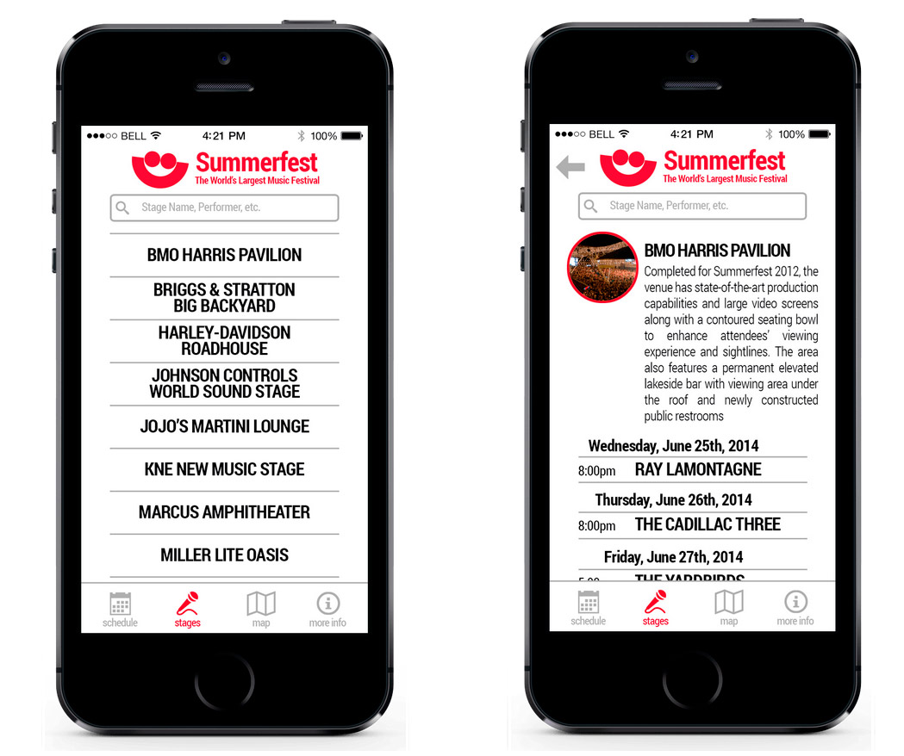
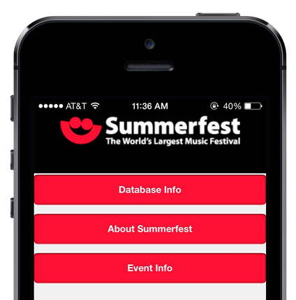
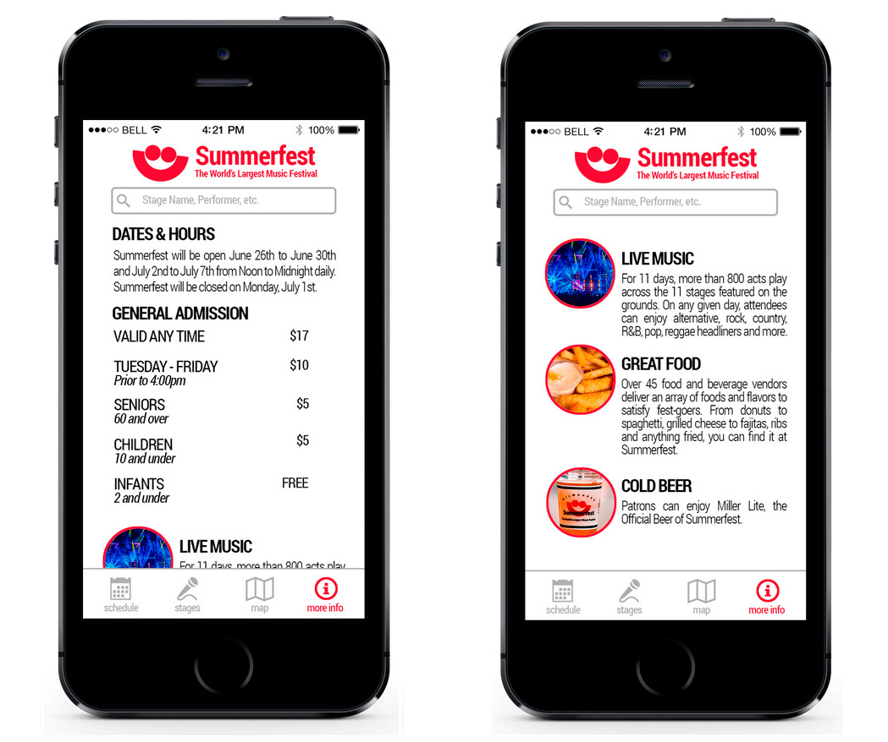

Summerfest: a yearly music festival held at Henry Maier Festival Park along the lakefront in Milwaukee, Wisconsin. The festival lasts for 11 days, is made up of 11 stages with performances from over 700 bands, running from late June through early July. Summerfest attracts between 800,000 and 1,000,000 people each year, promoting itself as "The World's Largest Music Festival".
For my final project in my Interaction Design course we we’re tasked with completely redesigning any app of our choice. As an avid Summerfest attendee I decided to pick this app because I had used it before and thought it could use a complete overhaul. I like to work on things that I myself have used and will use in the future. Not only did the app need some serious visual and design work, but the user experience left a lot to be desired.
Their old version:
(click for full view)

My redesign:
(click for full view)

Synopsis:
The first thing I do when starting a project is to sit down and ask myself some simple yet important questions:
What is this project trying to accomplish and how can I best go about achieving that?
Since this was for my design course I obviously wanted the app to be more visually appealing. Whenever I design for mobile I try to keep it simple, minimal and clean. Although this was the primary objective, I also wanted to improve the experience of the app. Both myself and my Summerfest-attending friends had used the app and we seemed to all agree it could be better from an UX perspective.
If I were using this, what would I want from the experience?
If I’m using this app I will most likely want a few simple questions immediately answered:
- 1) Who’s playing right now and where are they playing?
- 2) Who’s playing later / in the future and when/where?
- 3) How do I find the stage I want to go to?
Whenever I had to make a major design or UX decision I came back to those three questions.
Redesigning the search
After creating wireframes and flowcharts of the current app I immediately noticed a few things that could be improved upon. The first major decision I made was to redesign the search process.
Searching for and viewing your result required 6 steps from the user:
- Be on the Schedule tab, as that is the only place the search icon is present.
- Select the icon to be brought to the search page.
- Type in their search and press enter.
- Press the search button.
- Be brought to a new screen displaying the result(s).
- Select result to be taken to another page displaying the information they want.

I immediately recognized this as something that could be simplified and improved.
The first decision I made was to include the search bar on every single page of the app. Not only does this give the search feature a more prominent role, but it removes some redundant steps and pages. The search result is displayed in the search bar itself. I made the result image smaller and used that space to provide a simple wiki description of the band. With so many bands playing (over 700!), people generally won’t know the majority of them and are probably fans of a certain style of music (ie they might not know Rise Against, but they like punk music). This info can help them choose their viewing experience.

Redesigning the schedule
The next step was to redesign what I believed to be the most important part of the app: the schedule. The schedule contains some basic yet important information: Who’s playing, when, and where.

I decided to go with an all capitalized, bold font for the artist name and a smaller, lighter, italicized font for all of the stage names, while using a normal font for the times. This accomplishes a few things. First, by separating information by font type and style it helps the user digest and process the information easier. I chose to bold and capitalize the artists to grab attention, as I believed the artists to be the most important piece of information.
Instead of a seemingly random order like on the left, it’s now ordered by time. The times are aligned far left to allow separation between the artist & stage name. A simple gray border helps distinguish between list items.
Design choices

Since I didn’t have access to the actual font Summerfest uses, I decided to go with Open Sans, which is very similar and has a lot different weights and styles. It is the only font used throughout the app. I went away from the gradients, the light blue icon colors and black backgrounds. I decided on a clean, white background with black, grey, and red being the only other colors used. All text is black or grey, with the active icon being red.

Although the launch screen is very simple and is only seen for maybe a second, I thought it was a good example of my design principle for the app. Less clutter. Cleaner. Sleek. Uncomplicated.
Introducing Stages
As a Summerfest attendee I always find myself at a certain stage for most of one night and at another for the next night. Stages tend to schedule similar acts throughout the night. For example, if the headliner at night is a hip-hop act, the stage will have similar hip-hop acts throughout the day. It’s also generally easier to stick around one area for the night when you’re there with a group of friends. Using all this experience and information I decided to make stages a more focal point of the app.

Stages use a list view similar to the Schedule, listed in alphabetical order. A picture and brief synopsis of the stage is given, as well as a schedule of the upcoming shows. A 'see on map' button will show the user exactly where the stage is located.
More Info...
The last portion of the app I remade was the more info section. I got rid of the three tabs at the top. This just led to more and unnecessary user input.


Dates, Hours, Prices are all listed first in a simple list with plenty of white space to make for easy reading. This is followed by a more detailed breakdown of the festival. I got rid of the large images to allow the entire section to be smaller. This allows for more information to be displayed at once, getting rid of unnecessary scrolling.
Thanks for reading! If you have any questions feel free to send me an email at hello@rossfenrick.com
Back to top